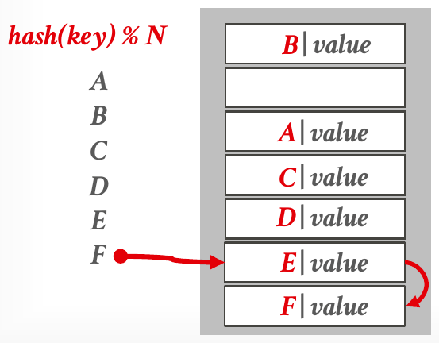
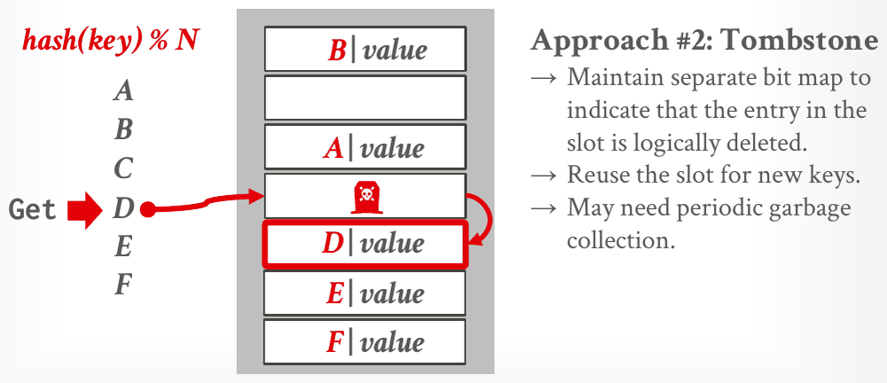
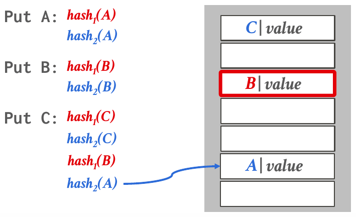

Database Internals in Go · Unit 3 · Lesson 1
Hash Tables: Hash Functions, Probing, and Cuckoo Hashing
Trace inserts, lookups and deletes in a linear-probe table and in a two-table cuckoo table, and explain why a DBMS wants a fast non-cryptographic hash function and tombstones for deletes.
Units 1 and 2 built the layers that store pages and keep them in memory. Unit 3 moves up to access methods, the data structures the execution engine uses to read and write the data in those pages. Lecture #07 sorts them into two kinds: hash tables, which are unordered, and trees, which are ordered. You have already used one hash table: the buffer pool's page table. A hash table needs a hash function and a scheme for collisions, and the lecture's two static schemes, linear probing and cuckoo hashing, are what HW3's Question 1 asks you to trace.
Unit 0, Lesson 2: t(x) holds 1, 2 and 2, and u(x) holds 2, 2 and 3. How many rows does SELECT * FROM t JOIN u ON t.x = u.x; return?
Unit 1, Lesson 2: BusTub's RID holds a page ID and a slot number, and Get() packs them into one int64 as page_id << 32 | slot_num. What does Get() return for page 3, slot 5?
Unit 2, Lesson 1: Lecture #04 says the buffer pool's page table is usually a fixed-size hash table. What does it map, and what happens to it when the DBMS restarts?
Where hash tables fit
Lecture #07 lists four places a DBMS uses data structures. Internal metadata, such as page tables and page directories, keeps track of the database and the system's state. Core data storage holds the tuples themselves (index-organized storage from Unit 1 is an example). Temporary data structures are built on the fly while a query runs, for example a hash table for a join. Table indexes help the DBMS find specific tuples quickly.
Every one of these structures raises two design decisions. Data organization is how the structure is laid out in memory or in pages, and it decides how well the structure performs. Concurrency is how several threads can use the structure at once without breaking it. This lesson and the next are about organization; Lessons 7 and 8 of this unit come back to concurrency.
What a hash table promises
A hash table is an unordered associative array that maps keys to values. It uses O(n) space, and an operation takes O(1) time on average and O(n) in the worst case. The slide adds "Databases care about constants!": two O(1) tables can differ a lot in speed. The notes point out what you give up: there is no sequential access with respect to other keys, so you can't walk the keys in order.
The simplest version is a static hash table: one giant array with a slot per element, where the key's slot is hash(key) % N. That works only under three assumptions the lecture calls unrealistic: the number of elements is known ahead of time and fixed, each key is unique, and a perfect hash function guarantees that different keys never collide. A collision is two different keys mapping to the same slot. Real tables need two parts:
- A hash function maps the large key space into a smaller domain. The trade-off is between being fast and having a low collision rate.
- A hashing scheme decides what to do when keys collide. The trade-off is between allocating a large table and running extra instructions to get or put a key.
#07 Database Hash Tables, "Hash Table Fundamentals" (6:40), slides 6–9: the hash table's costs, the static table and its unrealistic assumptions, and the two design decisions.
Hash functions
A hash function takes any key and returns an integer representation of it, usually 32 or 64 bits. The output must be deterministic: the same key always gives the same hash. The notes describe the two extremes. A function that always returns the same value is very fast but makes every key collide. A "perfect" hash function never collides but is too slow to compute. The best choice lies in between.
Slide 10 says the only two properties a DBMS cares about are speed and collision rate. A cryptographic hash such as SHA-2 buys a third property, protecting the key's contents, and a DBMS doesn't need it: these hashes are used inside the system, so no information leaks out. Slide 11 lists the usual non-cryptographic choices, from CRC-64 (1975) through MurmurHash, Google's CityHash and FarmHash, to RapidHash (2019), and marks Facebook's XXHash (2012) as the state of the art. The notes name its current version, XXHash3.
Go's standard library has non-cryptographic hashes as well as crypto/sha256. hash/crc64 is the CRC-64 from slide 11, and hash/maphash gives fast hash functions meant for hash tables. Its documentation says they are not cryptographically secure. A maphash.Seed is random, though, and "local to a single process and cannot be serialized or otherwise recreated in a different process". That suits an in-memory table, but a hash table stored on disk needs the same hash for a key after a restart, so it needs a function with a fixed seed.
#07 Database Hash Tables, "Hash Functions" (13:23), slides 10–12: what a DBMS wants from a hash function, the list of common ones, and the static hashing schemes to come.
Linear probe hashing
The lecture's two static schemes both use open addressing: every entry lives in the slot array itself, and a collision is resolved by trying other slots. Linear probe hashing is the most basic one, and the notes say it is typically the fastest. It is a single giant table of fixed-length slots, used as a circular buffer:
- Insert: hash the key to a slot. If the slot is taken, scan forward to the next free slot, wrapping from the end of the array to the start.
- Lookup: start at the key's slot and scan forward until you find the key. If you reach an empty slot, or have scanned every slot, the key isn't in the table. That is why each slot stores the key as well as the value: the scan needs to know when it has found the right entry.

The table's fullness is its load factor: active keys divided by the number of slots. When it gets too high, the DBMS allocates a new table twice as large and rehashes every entry into it. The notes add that tables are typically sized at twice the number of expected elements, to keep collisions rare. Compared with the chained tables in the next lesson, linear probing stores no pointers, so it uses less memory, and its probes read contiguous memory, which is good for the cache. Its weakness is primary clustering: at a high load factor, long runs of occupied slots form, and every key that hashes into a run has to scan to its end.
Fixed-length keys and values are stored directly in the table's slots, optionally with the key's hash so that comparisons are faster. Variable-length keys and values go into a separate private temporary table, and the hash table stores the hash as its key and a record ID that points into that table as its value.
#07 Database Hash Tables, "Linear Probe Hashing" (20:06), slides 13–14: the insert build above, the load factor and resizing.
Deleting from a linear-probe table
Deletes are where linear probing gets tricky. In the slide's table, suppose you delete C by making its slot empty. A later Get D hashes to C's old slot, finds it empty and stops, so it reports that D isn't in the table, although D sits one slot further down. The lecture gives two fixes:
- Movement: after removing the entry, shift later entries up to fill the hole, rehashing keys until you reach the first empty slot. Only entries that were originally shifted may move. This is rarely, if ever, used, because it reorganizes the table and is expensive when there are many keys.
- Tombstones: leave a marker, a tombstone, in the slot to say that its entry is logically deleted. The notes call this the most common approach.

Get D reaches C's tombstone and keeps scanning, so it finds D in the next slot. The slide keeps the tombstones in a separate bitmap, lets new keys reuse a tombstone's slot, and warns that tombstones may need periodic garbage collection (Lecture #07, slide 17).So a tombstone behaves differently for the two operations. A lookup treats it as occupied and scans past it. An insert treats it as free and may put a new key there; in the slide's next build, Put G lands in C's old slot. Tombstones don't count toward the load factor, which counts active keys, but they still cost probes, which is why the slide mentions garbage collection.
Project 2 also uses the word "tombstone", for B+tree leaf entries whose delete hasn't been applied yet. It is a different mechanism; Lesson 4 introduces it.
#07 Database Hash Tables, "Handling Deletions" (30:37), slides 16–17: why emptying a slot breaks lookups, movement, and tombstones.
Non-unique keys and optimizations
When one key has several values, the lecture gives two choices. A separate linked list stores, for each key, a pointer to a list of its values, which may overflow to several pages. Redundant keys store the same key once per value, directly in the table. Slide 18 says "This is what most systems do", and the notes add that everything about linear probing still works.
Slide 19 lists three optimizations:
- Specialized tables for each key type or size. For string keys, for example, small strings can be stored in the table and larger ones only as a pointer or a hash.
- Metadata in a separate array: a packed bitmap that records which slots are empty or hold tombstones, which helps the DBMS avoid looking up deleted keys.
- Versions for the table and its slots. To clear the whole table, increment the table's version; any slot whose version doesn't match is treated as empty. This lets the DBMS reuse the table's memory without touching every slot.
The notes name Google's absl::flat_hash_map as a state-of-the-art implementation of linear probe hashing.
Cuckoo hashing
Cuckoo hashing uses several hash functions, so each key has several possible slots. The notes say the hash functions are usually one algorithm, such as XXHash, run with different seeds, so they give different hashes for the same key.
- Insert: if one of the key's slots is free, use it. If none is, evict the key in one of them and re-hash the evicted key to its other slot, which may evict another key, and so on.
- Lookup and delete: check only the key's slots, one per hash function.
- Cycles: rarely, the evictions loop forever. The DBMS then rebuilds the table, either with new hash function seeds (less common) or larger tables (more common).

Get B checks only hash1(B) and hash2(B) (Lecture #07, slide 21).A lookup or delete checks a fixed number of slots, one per hash function, which is why slide 20 calls them O(1). A professor's note in the notes qualifies that: computing a hash isn't always O(1) either, so lookups and deletes may cost more. Inserts may cost much more, because one insert can start a long chain of evictions.
The sources don't agree on the layout. The slides use a single table with two hash functions. The notes describe several tables, one hash function each, and the professor's note says practical implementations use one table. HW3 uses two separate tables. Its rules, which the quiz below uses:
- Both tables have 4 entries. Table 1 uses h1(x) = (x >> 2) & 0b11, the fourth and third least significant bits. Table 2 uses h2(x) = x & 0b11, the two lowest bits.
- An insert tries table 1 first. When a replacement is necessary, it first evicts the element in table 1, and the evicted key moves to its slot in the other table.
For example, 445 is 0b110111101, so h1(445) = 0b11 = 3 and h2(445) = 0b01 = 1.
#07 Database Hash Tables, "Cuckoo Hashing" (40:01), slides 20–21: multiple hash functions, the displacement build above, and rebuilding on a cycle.
Work it out
Practice the lecture's rules on new keys before the homework questions.
-
What to think about
All three keys hash to the same slot. What happens when the probe runs off the end of the array? And what does a lookup do when it meets a tombstone?
The method
6 % 8 = 14 % 8 = 22 % 8 = 6. Place each key in the first free slot from 6 onward, wrapping to slot 0. Get 22 starts at slot 6 and scans past anything that isn't 22, including the tombstone. The load factor counts active keys only.
The result
6 in slot 6, 14 in slot 7, 22 wraps to slot 0. After the delete, slot 7 holds a tombstone. Get 22 checks slots 6, 7 and 0: 3 slots. Load factor: 2 active keys / 8 slots = 0.25.
-
What to think about
h2 is the last two bits of the key. h1 shifts the key right by two first, so it reads bits 2 and 3.
The method
Take each key mod 4 for h2. For h1, take (key / 4, rounded down) mod 4. Then compare the pairs.
The result
15: h1 = 3, h2 = 3. 463: h1 = 3, h2 = 3. 789: h1 = 1, h2 = 1. So 463 wants exactly the same two slots as 15, and table 1 entry 3 is also 445's first choice (h1(445) = 3).
The homework behind these questions
The questions marked HW3 come from CMU's Homework #3: Question 1, with the original figures. Work each one out on paper first, then click the option you got. The quiz tells you at once whether it matches CMU's official answer, and explains why. To compare your working step by step, open the official solutions for Question 1.
Check your understanding
The first two questions use HW3's linear-probe table: 4 slots, one key/value pair per slot, h1(x) = x % 4, the next free slot on a conflict, an initially empty table, and tombstones on delete.
HW3 Q1(a): insert (3, C) and then (8, D), where 3 and 8 are the keys. What does the table hold?
HW3 Q1(b): starting from (a)'s table, delete (8, D), insert (0, E), insert (4, F), and finally delete (3, C). What does the table hold?
The last three use HW3's cuckoo tables, with the rules given in the cuckoo hashing section. Their initial state is table 1 entry 3 = 445 and table 2 entry 3 = 15, with every other entry empty.
HW3 Q1 cuckoo (a): which sequence of inserts into empty tables produces that initial state?
HW3 Q1 cuckoo (b): from the initial state, insert 463 and then 789. The hashes (h1, h2) are 445: (3, 1), 15: (3, 3), 463: (3, 3) and 789: (1, 1). What do the tables hold, entries 0 to 3?
HW3 Q1 cuckoo (c): starting from empty tables with the same hash functions, which sequence of inserts causes an infinite loop?
Primary sources: CMU 15-445/645 Fall 2025 Lecture #07 slides 2–21 and notes (sections 1–4); Homework #3 Question 1 and its official solutions; BusTub src/include/common/rid.h at commit d49b823 (warm-up); the Go documentation for hash/maphash.